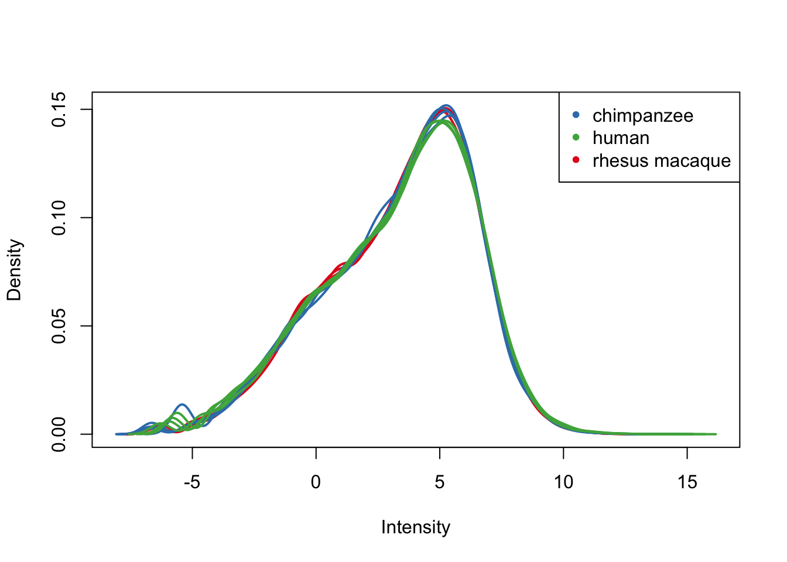

TMM_voom_on_GC_normalized_data
Lauren Blake
July 20, 2016
This script will take GC content-normalized counts and adjust for library size (via TMM) as well as the dependency between mean and variance (via voom).
# Load libraries
library("gplots")##
## Attaching package: 'gplots'## The following object is masked from 'package:stats':
##
## lowesslibrary("ggplot2")
library("RColorBrewer")
library("scales")
library("edgeR")## Loading required package: limmalibrary("R.utils")## Loading required package: R.oo## Loading required package: R.methodsS3## R.methodsS3 v1.7.1 (2016-02-15) successfully loaded. See ?R.methodsS3 for help.## R.oo v1.20.0 (2016-02-17) successfully loaded. See ?R.oo for help.##
## Attaching package: 'R.oo'## The following objects are masked from 'package:methods':
##
## getClasses, getMethods## The following objects are masked from 'package:base':
##
## attach, detach, gc, load, save## R.utils v2.3.0 (2016-04-13) successfully loaded. See ?R.utils for help.##
## Attaching package: 'R.utils'## The following object is masked from 'package:utils':
##
## timestamp## The following objects are masked from 'package:base':
##
## cat, commandArgs, getOption, inherits, isOpen, parse, warningslibrary("plyr")
library("limma")
library("statmod")
source("~/Reg_Evo_Primates/ashlar-trial/analysis/functions.R")
# Load colors
colors <- colorRampPalette(c(brewer.pal(9, "Blues")[1],brewer.pal(9, "Blues")[9]))(100)
pal <- c(brewer.pal(9, "Set1"), brewer.pal(8, "Set2"), brewer.pal(12, "Set3"))
#Load the data
#GC-normalized counts
counts_genes <- read.delim("~/Reg_Evo_Primates/ashlar-trial/data/gene_counts_with_gc_correction.txt")
dim(counts_genes)## [1] 16616 47 #Sample information
samples <- read.csv("~/Reg_Evo_Primates/ashlar-trial/data/Sample_info_RNAseq.csv")
# Remove H1H (sample 17) from labels
samples <- samples[-17,]
labels <- paste(samples$Species, samples$Tissue, sep=" ")Correction for library size
# Perform TMM
dge_gc <- DGEList(counts=as.matrix(counts_genes), genes=rownames(counts_genes), group = as.character(t(labels)))
dge_gc <- calcNormFactors(dge_gc)
# Make sure species-tissues labels and DGEList object contain the same 47 samples
summary(samples[,1] %in% colnames(dge_gc))## Mode TRUE NA's
## logical 47 0Voom and corfit (with the cyclic loess normalization)
We will use voom in order to decouple the dependency between mean and variance. We will use corfit to model a within-individual term.
Although we will use the cyclic loess normalization in future analyses (because we feel it best mimics the biological relationship between tissues and species), we will also explore other normalizations at the end of this file.
## Voom requires a design matrix as input
## To make contrasts easier to formulate, we rename factors species and tissue in a single factor
condition <- factor(paste(samples$Species,samples$Tissue,sep="."))
design <- model.matrix(~ 0 + condition)
colnames(design) <- gsub("condition", "", dput(colnames(design)))## c("conditionchimpanzee.heart", "conditionchimpanzee.kidney",
## "conditionchimpanzee.liver", "conditionchimpanzee.lung", "conditionhuman.heart",
## "conditionhuman.kidney", "conditionhuman.liver", "conditionhuman.lung",
## "conditionrhesus macaque.heart", "conditionrhesus macaque.kidney",
## "conditionrhesus macaque.liver", "conditionrhesus macaque.lung"
## )# Voom with individual as a random variable
cpm.voom.cyclic <- voom(dge_gc, design, normalize.method="cyclicloess", plot=T)
corfit <- duplicateCorrelation(cpm.voom.cyclic, design, block=samples$Individual)
# corfit$consensus = 0.1888776
# Final voom on filtered data
cpm.voom.cyclic <- voom(dge_gc, design, normalize.method="cyclicloess", plot=TRUE, block=samples$Individual, correlation=corfit$consensus)boxplot(cpm.voom.cyclic$E, col = pal[as.numeric(samples$Tissue)])
plotDensities(cpm.voom.cyclic, group=samples$Tissue, col=pal[as.numeric(samples$Tissue)])# Save the gene expression data
#write.table(cpm.voom.cyclic$E,file="/Users/LEB/Reg_Evo_Primates/ashlar-trial/data/gc_cyclic_loess_random_var_gene_exp_counts",sep="\t", col.names = T, row.names = T)
# Density plots for each tissue
col = as.data.frame(pal[as.numeric(samples$Species)])
group = as.data.frame(samples$Species)
all_hearts <- c(1,5,9,13, 20,24,28,32,36,40,44)
all_kidneys <- c(2,6,10,14,17, 21,25,29,33,37,41,45)
all_livers <- c(3,7,11,15,18, 22,26,30,34,38,42,46)
all_lungs <- c(4,8,12,16,19, 23,27,31,35,39,43,47)
col = as.data.frame(pal[as.numeric(samples$Species)])
col_hearts = col[all_hearts,]
col_kidneys = col[all_kidneys, ]
col_livers = col[all_livers, ]
col_lungs = col[all_lungs, ]
group = as.data.frame(samples$Species)
group_hearts = group[all_hearts, ]
group_kidneys = group[all_kidneys, ]
group_livers = group[all_livers, ]
group_lungs = group[all_lungs, ]
plotDensities(cpm.voom.cyclic[,all_hearts], col = col_hearts, legend = FALSE)
legend('topright', legend = levels(group_hearts), col = levels(col_hearts), pch = 20)plotDensities(cpm.voom.cyclic[,all_kidneys], col=col_kidneys, legend = FALSE)
legend('topright', legend = levels(group_kidneys), col = levels(col_kidneys), pch = 20)
plotDensities(cpm.voom.cyclic[,all_livers], col=col_livers, legend = FALSE)
legend('topright', legend = levels(group_livers), col = levels(col_livers), pch = 20)plotDensities(cpm.voom.cyclic[,all_lungs], col=col_lungs, legend = FALSE)
legend('topright', legend = levels(group_lungs), col = levels(col_lungs), pch = 20)PCA and clustering
# PCA
pca_genes <- prcomp(t(cpm.voom.cyclic$E), scale = F)
scores <- pca_genes$x
# Save this PCA data
write.table(scores,file="/Users/LEB/Reg_Evo_Primates/ashlar-trial/data/PC_gc_cyclic_loess_random_var_gene_exp",sep="\t", col.names = T, row.names = T)
#Make PCA plots with the factors colored by tissue
### PCs 1-10 Raw Data (Function code from Julien Roux)
for (n in 1:9){
col.v <- pal[as.integer(samples$Tissue)]
plot_scores(pca_genes, scores, n, n+1, col.v)
}# Clustering (original code from Julien Roux)
# I would argue that Pearson's correlation makes more sense here because gene expression is taken on an interval scale rather than an ordinal scale.
cors <- cor(cpm.voom.cyclic$E, method="pearson", use="pairwise.complete.obs")
heatmap.2( cors, scale="none", col = colors, margins = c(12, 12), trace='none', denscol="white", labCol=labels, ColSideColors=pal[as.integer(as.factor(samples$Species))], RowSideColors=pal[as.integer(as.factor(samples$Tissue))+9], cexCol = 0.2 + 1/log10(15), cexRow = 0.2 + 1/log10(15))
# Clustering (original code from Julien Roux)
cors <- cor(cpm.voom.cyclic$E, method="spearman", use="pairwise.complete.obs")
heatmap.2( cors, scale="none", col = colors, margins = c(12, 12), trace='none', denscol="white", labCol=labels, ColSideColors=pal[as.integer(as.factor(samples$Species))], RowSideColors=pal[as.integer(as.factor(samples$Tissue))+9], cexCol = 0.2 + 1/log10(15), cexRow = 0.2 + 1/log10(15))
Other normalization methods
Voom without individual as a random variable + cyclic loess
cpm.voom <- voom(dge_gc, design, normalize.method="cyclicloess", plot=T)col = as.data.frame(pal[as.numeric(samples$Tissue)])
group = as.data.frame(samples$Tissue)
boxplot(cpm.voom$E, col = pal[as.numeric(samples$Tissue)])plotDensities(cpm.voom, group=samples$Tissue, col=pal[as.numeric(samples$Tissue)])
# Perform PCA
pca_genes <- prcomp(t(cpm.voom$E), scale = F)
scores <- pca_genes$x
#Make PCA plots with the factors colored by tissue
for (n in 1:1){
col.v <- pal[as.integer(samples$Tissue)]
plot_scores(pca_genes, scores, n, n+1, col.v)
}
# Clustering
cors <- cor(cpm.voom$E, method="spearman", use="pairwise.complete.obs")
heatmap.2( cors, scale="none", col = colors, margins = c(12, 12), trace='none', denscol="white", labCol=labels, ColSideColors=pal[as.integer(as.factor(samples$Species))], RowSideColors=pal[as.integer(as.factor(samples$Tissue))+9], cexCol = 0.2 + 1/log10(15), cexRow = 0.2 + 1/log10(15))
# Clustering
cors <- cor(cpm.voom$E, method="pearson", use="pairwise.complete.obs")
heatmap.2( cors, scale="none", col = colors, margins = c(12, 12), trace='none', denscol="white", labCol=labels, ColSideColors=pal[as.integer(as.factor(samples$Species))], RowSideColors=pal[as.integer(as.factor(samples$Tissue))+9], cexCol = 0.2 + 1/log10(15), cexRow = 0.2 + 1/log10(15))
Voom with individual as a random variable + no normalization method
cpm.voom.none <- voom(dge_gc, design, normalize.method="none", plot=T)corfit <- duplicateCorrelation(cpm.voom.none, design, block=samples$Individual)
# corfit$consensus = 0.1888776
# Final voom on filtered data
cpm.voom.none <- voom(dge_gc, design, normalize.method="none", plot=TRUE, block=samples$Individual, correlation=corfit$consensus)col = as.data.frame(pal[as.numeric(samples$Tissue)])
group = as.data.frame(samples$Tissue)
boxplot(cpm.voom.none$E, col = pal[as.numeric(samples$Tissue)])plotDensities(cpm.voom.none, group=samples$Tissue, col=pal[as.numeric(samples$Tissue)])
# Perform PCA
pca_genes <- prcomp(t(cpm.voom.none$E), scale = F)
scores <- pca_genes$x
#Make PCA plots with the factors colored by tissue
for (n in 1:1){
col.v <- pal[as.integer(samples$Tissue)]
plot_scores(pca_genes, scores, n, n+1, col.v)
}
# Clustering (original code from Julien Roux)
cors <- cor(cpm.voom.none$E, method="spearman", use="pairwise.complete.obs")
heatmap.2( cors, scale="none", col = colors, margins = c(12, 12), trace='none', denscol="white", labCol=labels, ColSideColors=pal[as.integer(as.factor(samples$Species))], RowSideColors=pal[as.integer(as.factor(samples$Tissue))+9], cexCol = 0.2 + 1/log10(15), cexRow = 0.2 + 1/log10(15))
# Clustering
cors <- cor(cpm.voom$E, method="pearson", use="pairwise.complete.obs")
heatmap.2( cors, scale="none", col = colors, margins = c(12, 12), trace='none', denscol="white", labCol=labels, ColSideColors=pal[as.integer(as.factor(samples$Species))], RowSideColors=pal[as.integer(as.factor(samples$Tissue))+9], cexCol = 0.2 + 1/log10(15), cexRow = 0.2 + 1/log10(15))Voom with individual as a random variable + quantile normalization
cpm.voom.quant <- voom(dge_gc, design, normalize.method="quantile", plot=T)corfit <- duplicateCorrelation(cpm.voom.none, design, block=samples$Individual)
# corfit$consensus = 0.1888776
# Final voom on filtered data
cpm.voom.quant <- voom(dge_gc, design, normalize.method="none", plot=TRUE, block=samples$Individual, correlation=corfit$consensus)col = as.data.frame(pal[as.numeric(samples$Tissue)])
group = as.data.frame(samples$Tissue)
boxplot(cpm.voom.quant$E, col = pal[as.numeric(samples$Tissue)])
plotDensities(cpm.voom.quant, group=samples$Tissue, col=pal[as.numeric(samples$Tissue)])# Perform PCA
pca_genes <- prcomp(t(cpm.voom.quant$E), scale = F)
scores <- pca_genes$x
#Make PCA plots with the factors colored by tissue
for (n in 1:1){
col.v <- pal[as.integer(samples$Tissue)]
plot_scores(pca_genes, scores, n, n+1, col.v)
}# Clustering (original code from Julien Roux)
cors <- cor(cpm.voom.quant$E, method="spearman", use="pairwise.complete.obs")
heatmap.2( cors, scale="none", col = colors, margins = c(12, 12), trace='none', denscol="white", labCol=labels, ColSideColors=pal[as.integer(as.factor(samples$Species))], RowSideColors=pal[as.integer(as.factor(samples$Tissue))+9], cexCol = 0.2 + 1/log10(15), cexRow = 0.2 + 1/log10(15))# Clustering
cors <- cor(cpm.voom.quant$E, method="pearson", use="pairwise.complete.obs")
heatmap.2( cors, scale="none", col = colors, margins = c(12, 12), trace='none', denscol="white", labCol=labels, ColSideColors=pal[as.integer(as.factor(samples$Species))], RowSideColors=pal[as.integer(as.factor(samples$Tissue))+9], cexCol = 0.2 + 1/log10(15), cexRow = 0.2 + 1/log10(15))